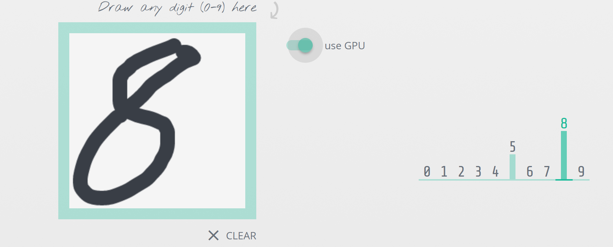

Educate, Visualize, Deploy, Develop
Machine Learning in the Browser
Oliver Zeigermann / @DJCordhose
(I) Educate
Everyone can be educated, they just need a browser and internet
Concepts are much easier to grok when you can play around with them
How does (Supervised) Machine learning work?
Built using deeplearn.js (more on that later in this talk), source code available

Neural Networks

- Learn about the process of training
- How does a neuron work?
- Neural Network Architecture
(II) Visualize
Interactively explore your data
Looking at the Quickdraw Dataset
Pivoting on random data

(III) Deploy
JavaScript might be the only language around
because all you have is a browser
- you on your mobile phone
- AI in browser based game
- combination with interactive visualizations and other browser features (like audio and video)
Keras.js
Running Keras Models in the Browser using GPU
https://transcranial.github.io/keras-js
Alternative: https://mil-tokyo.github.io/webdnn/
TensorFire
GPU based inference (no training) in the browser, runs Keras and TensorFlow models

(IV) Develop
Most obvious reason: JavaScript is the language you are most comfortable with
You just happen to develop for the browser
deeplearn.js
Full TypeScript ML library using browser GPU

https://pair-code.github.io/deeplearnjs
Includes full training mimicking TensorFlow and NumPy API https://research.googleblog.com/2017/08/harness-power-of-machine-learning-in.html
deeplearn.js: Coding style
Use all Browser features in combination with Machine Learning

https://pair-code.github.io/deeplearnjs/docs/tutorials/intro.html
More Machine Learning with JavaScript
- ConvNetJS: Visual NN exploration for learning (t-SNE cluster exploration from same auhtor)
- Brain.js : simple and straing forward NN implementation
- synaptic.js: similar scope as Brain.js, a bit more active
- ml.js: generic low level libs for machine learning
Wrapping Up
Browser based ML apps
- can make use of any GPU (not only CUDA)
- have highest reach due to zero installation
- can be easily integrated into existing Web Apps
- allow for best visualization
- are ideal for interactive learning
Machine Learning in the Browser, hh.js 2017
Oliver Zeigermann / @DJCordhose
http://bit.ly/ml-hhjs